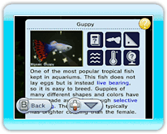

10 |
Viewing the Fish |
 |
|
If you point to a fish in the aquarium and press
● Watch Fish Swim / Look Around the Aquarium from Fish’s Point of View If you focus on a fish and select Swim, you can watch the selected fish swim from inside the aquarium. You can use the following controls when you are watching a fish swim:
*Fish will swim automatically. You cannot control the direction they swim in. 
● Read the Fish Description |
 |
 |
 |